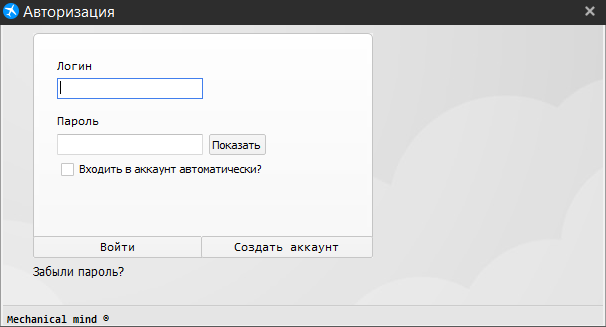

Окно авторизации
Это окно создано для подтверждения личности и обеспечения сохранности личной информации пользователя. Для входа в аккаунт требуется ввести логин и пароль, для подтверждения нажмите кнопку “Войти”.

Если вы не помните свой пароль, то воспользуйтесь функцией восстановления пароля. Для перехода к окну восстановления пароля нажмите кнопку "Забыли пароль?". Если же у вас еще нету аккаунта, то нажмите кнопку "Создать аккаунт".